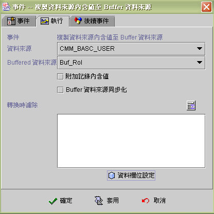
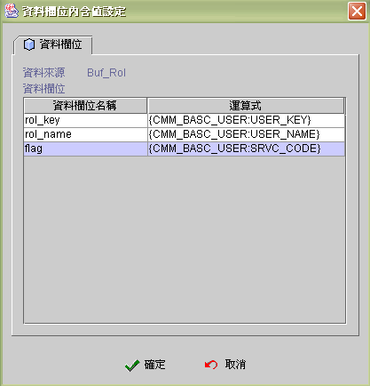

|

複製資料來源內容值到 Buffer 資料來源
(copy data source data to buffer data source)
事件執行狀態與訊息 (event runtime status and message)
複製資料來源內容值到 Buffer 資料來源
。
-
資料來源 (data source) ： 選擇資料來源
(source)。
-
Buffer 資料來源 (buffered DS)：
選擇 buffer 資料來源 (target)。
-
附加紀錄內含值 (append record data)：
把資料來源附加 (append) 在 Buffered data source 原有記錄之後。
-
Buffer 資料來源同步化 (buffer data source synchronize)：
核取此屬性 (checked)，系統在資料由資料來源複製到 Buffered
Data Source
時，Buffered 資料來源會同步的引發新增前後事件 (before and
after insert event) 與存檔前後事件 (before and after post event)，相關連的元件
(data aware component) 亦會逐筆更新顯示，需要快速複製資料時，不要核取此屬性
(unchecked)。
-
篩選條件
(transfer filter)：
執行複製資料來源時，會依條件運算式過濾資料，當條件為真時
(非零且非空字串) ，才進行複製 (copy)。
-
資料欄位設定 (record data fields setting)： 設定 Buffer
Data Source 欄位擬填入的內含值。

按下【資料欄位設定】(record data
fields setting)
的按鍵之後，會出現下列設定 Buffered
資料欄位的視窗。資料欄位名稱 (field name) 是依照 Buffer Data
Source
的欄位順序排列，欄位內含值使用運算式 (formula) 填入。

▲Top
事件執行狀態與訊息 (event runtime status and message)
EvStatus("事件名稱") ：取得事件執行狀態。
|
回傳值 |
狀態 |
| 空字串 |
事件未被引發。 |
| -1 |
事件啟動後，依條件判斷後執行否則事件。 |
| 1 |
事件啟動後，執行成功。 |
| 0 |
事件啟動後，執行過程有誤。 |
EvStatus("事件名稱.error") ：取得事件執行錯誤代碼。
|
回傳值 |
說明 |
| 空字串 或 0 |
沒有錯誤訊息或無法取得錯誤訊息。 |
| 1 |
資料來源或 Buffer 資料來源錯誤。 |
| 2 |
Buffer 資料來源錯誤。 |
EvStatus("事件名稱.INFO_STRING") ：取得事件執行
INFO_STRING 的訊息。
|
INFO_STRING |
回傳值 |
說明 |
|
name |
資料來源名稱 |
資料來源名稱。 |
| name2 |
buffer 資料來源名稱 |
buffer 資料來源名稱。 |
|
read |
資料記錄筆數 |
讀取資料來源筆數。 |
|
count |
資料記錄筆數 |
寫入buffer 資料來源筆數。 |
▲Top
Copyright © 2001~
2004 Probe Technology Inc. . All Rights Reserved.
Questions, comments,
and suggestions to Service@probe.com.tw
|